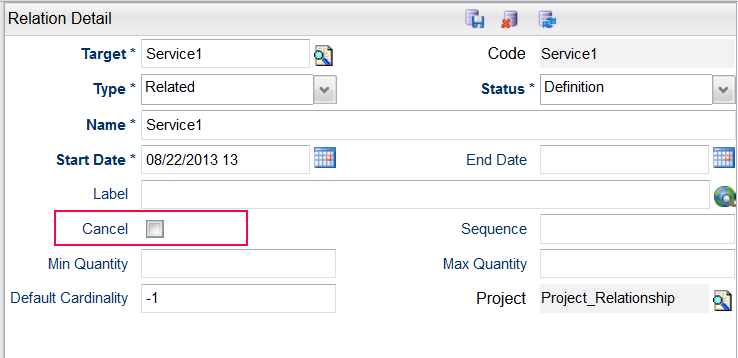
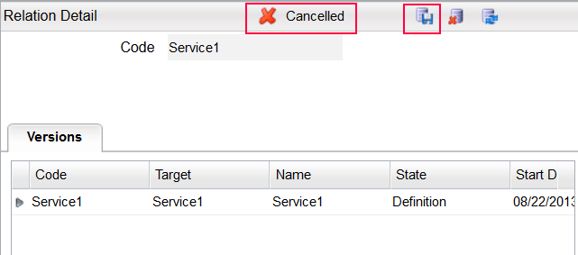

Remove an Inherited RelationshipCancel an Inherited RelationshipIf a base item has a relationship and the item is inherited by another item, the second item will now inherit the relationship as well. In this case, in order to indicate that the relationship should not be inherited for the second item, it needs to be cancelled. You can only cancel a relationship while the item is still in Definition status. To cancel a relationship, do the following:
  End Date an Object or RelationshipWhen an object or relationship that was previously active has to be made inactive, the end date has to be defined for the object or relationship. Note: You can only end date objects that belong to the same object. For example, you can end date an offer because the end date is a property of the offer itself. But you cannot end date an inherited relationship. For example, if a base product has a relationship to a service and the product is inherited by another product P1, product P1 will now inherit the relationship to the service. You cannot specify an end date for the service that appears in P1, as P1 is not the owner of the service; the base product is the owner of the service. To remove the relationship inheritance for all the items which inherit the base item, you have to end date the relationship in the base item. Refer to Start and End dates for details. To remove the relationship only in a child item, you have to apply an eligibility condition on the child relationship, as described in the following section. Use an Eligibility Condition to End an Inherited RelationshipIf an end date is specified on a child item, the catalog will fall back on the version defined in the parent item when the child version expires. As such, this method cannot be used to end a relationship for the child item. To end the inherited relationship for the child item, you have to add an eligibility condition on the child relationship. This condition will indicate to the catalog that the service is not eligible for inclusion and should not be added. The start date of the not eligible condition should to set to the desired end date of the relationship. |